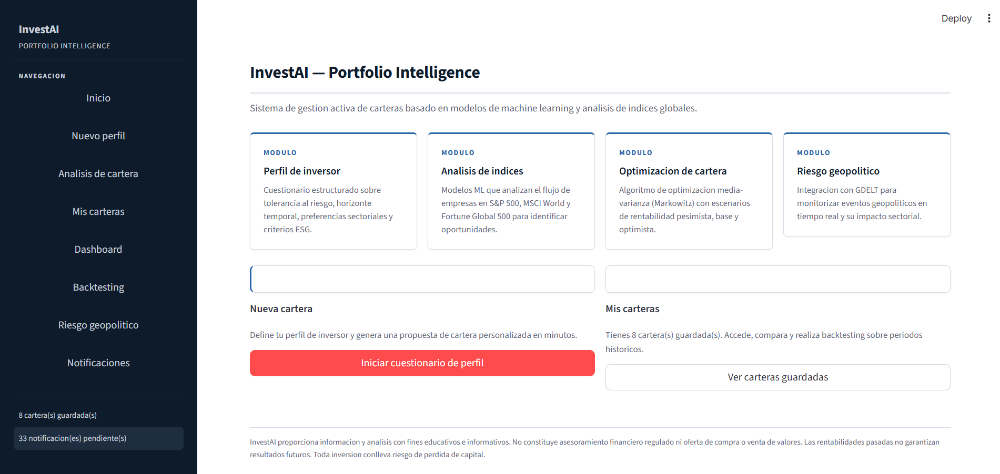
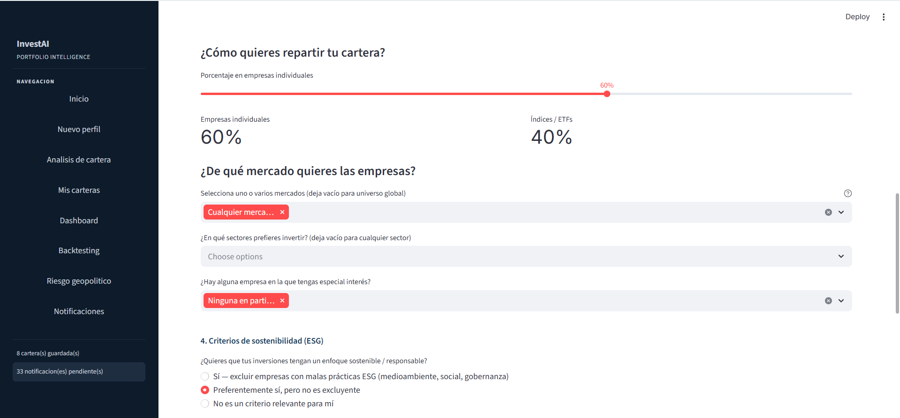
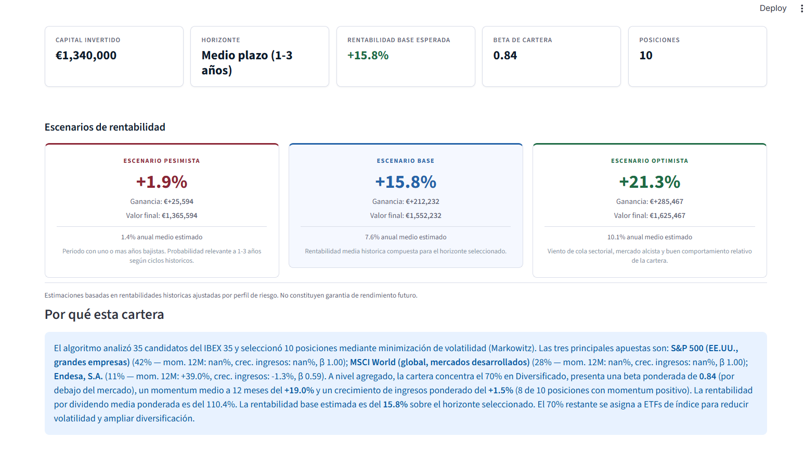
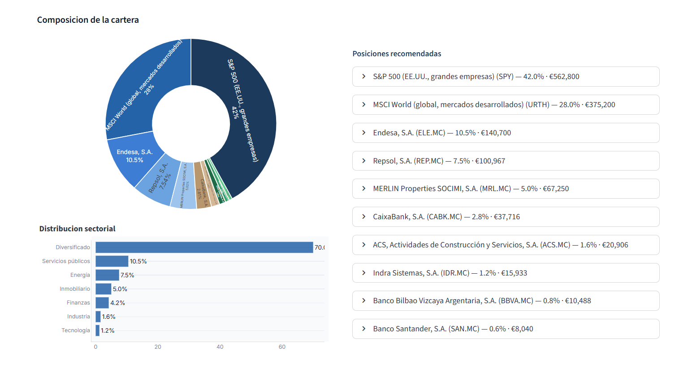
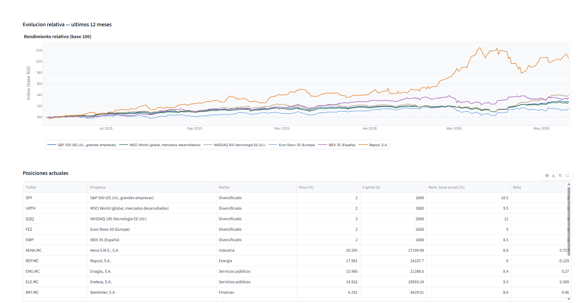

Portfolio Intelligence
InvestAI — Portfolio Intelligence
Sistema de gestión activa basado en Machine Learning
Ignacio Mulas · Carmen Lozano · Samuel Izquierdo · Maria Macías · Berta Vaquero
El 6 de mayo de 2010, el Dow Jones cayó 998.50 puntos en minutos — la mayor caída intradía de la historia — antes de recuperarse casi completamente en 20 minutos.
Un único fondo de inversión lanzó una orden algorítmica de venta masiva. El efecto dominó se propagó por todo el sistema en segundos.
El inversor particular no puede depender de herramientas estáticas ante un mercado que se mueve en milisegundos.
Necesidad identificada
Una herramienta accesible que ayude al inversor particular a construir carteras robustas con análisis de riesgo en tiempo real.
Según Accenture Technology Vision 2024, las empresas han pasado de usar la IA para "ahorrar costes" a usarla para "crecer en ingresos".
Las herramientas de análisis financiero institucional — antes reservadas a Bloomberg Terminal ($24.000/año) — ahora pueden democratizarse con IA y datos abiertos.
Para un inversor, esto se traduce en una oportunidad histórica: identificar modelos de negocio hipereficientes mediante análisis predictivo.
Artículo: "AI to broaden investment opportunities in 2026" — The Economic Times
Las firmas más pequeñas serán las principales beneficiadas de la democratización del análisis con IA.
| Característica clave | Robo-Advisors | Terminales Pro | Social Trading | InvestAI ✦ |
|---|---|---|---|---|
| Personalización por perfil de riesgo | ✔ | ✔ | ✗ | ✔ |
| Predicción con Machine Learning | ✗ | ✗ | ✗ | ✔ |
| Análisis de riesgo geopolítico | ✗ | ✔ | ✗ | ✔ |
| Optimización Markowitz (Sharpe) | ✗ | ✔ | ✗ | ✔ |
| Interfaz accesible (retail) | ✔ | ✗ | ✔ | ✔ |
| Coste accesible | ✔ | ✗ | ✔ | ✔ |
| Backtesting histórico | ✗ | ✔ | ✗ | ✔ |
| Escenarios pesimista/base/optimista | ✗ | ✗ | ✗ | ✔ |
El motor de scoring analiza 7 factores cuantitativos (capitalización, momentum, crecimiento de ingresos, margen, beta, PER, sector) para identificar empresas con mayor probabilidad de superar al índice.
Integración con Google News y análisis NLP que detecta eventos globales y ajusta automáticamente la exposición sectorial ante tensiones geopolíticas.
Asignación de pesos mediante optimización media-varianza. Para perfiles conservadores minimiza la varianza; para agresivos maximiza el ratio de Sharpe.
Interfaz web desplegada en Streamlit. Sin instalación, sin curva de aprendizaje. Cuestionario de perfil en 2 minutos y cartera generada automáticamente.
Modelo de machine learning que transforma datos brutos de índices globales (S&P 500, IBEX 35, MSCI World) en decisiones estratégicas para la gestión activa de una cartera, a través de un dashboard operativo en tiempo real con análisis de riesgo geopolítico integrado.
Cuestionario integral para capturar la tolerancia al riesgo, horizonte temporal, preferencias sectoriales, criterios ESG y capacidad de inversión.
El sistema no realiza ninguna inversión sin la aprobación del usuario. Toda propuesta es revisable antes de guardarse.
Integración automatizada de datos financieros (precios y fundamentales), composición de índices (S&P 500, IBEX 35) y actualidad geopolítica en tiempo real.
Algoritmo que analiza y clasifica hasta 80 activos evaluando 7 factores cuantitativos según su alineación con el perfil del cliente.
Asignación de activos (acciones, ETFs o mixta) aplicando el modelo de Markowitz para minimizar la varianza o maximizar el ratio de Sharpe.
Modelado de expectativas de rentabilidad (pesimista, base, optimista) ajustadas por riesgo, incluyendo simulaciones de inversión recurrente (Dollar-Cost Averaging).
Identificar, sintetizar y validar un conjunto de indicadores clave para predecir con alta fiabilidad los rebalanceos en S&P 500, IBEX 35 y MSCI World.
Incorporar una capa de análisis de datos no estructurados de eventos globales para ajustar dinámicamente la exposición al riesgo sectorial.
Construir un motor de scoring multifactor y un optimizador de cartera que supere al benchmark en rentabilidad ajustada por riesgo.
Desplegar una interfaz interactiva que centralice el perfilado del inversor, la generación de cartera y la visualización de métricas de riesgo.
Asegurar robustez técnica para el envío de notificaciones y la coherencia de la cartera ante cambios de mercado.
Muchos creen que la IA iguala el campo de juego, pero herramientas de IA para análisis de datos financieros tienen tasas de "alucinación" (datos falsos) de hasta el 41%. Un error basado en estos datos puede llevar a pérdidas totales.
Fuente: IIBA — "AI Investing for Retail Investors: Opportunities, Risks, and What Most People Miss"
| Tipo | Detalle | Estimación |
| APIs de datos | yfinance (gratuito) | €0 |
| Hosting | Streamlit Cloud (free tier) | €0 |
| Desarrollo | ~4 meses × equipo | ~480h |
| Coste total | €0 (open source) |





Sustituir yfinance por Alpha Vantage o Polygon.io para datos de mayor calidad, mayor frecuencia y datos fundamentales más completos.
Entrenar un modelo Random Forest o XGBoost sobre histórico de inclusiones/exclusiones de S&P 500 para mejorar la probabilidad de outperform.
Integrar Interactive Brokers o DeGiro API en modo paper trading para que el usuario pueda simular la ejecución real de la cartera propuesta.
Migrar de JSON local a Supabase/PostgreSQL y añadir autenticación para que múltiples usuarios puedan usar la plataforma simultáneamente.
InvestAI — Portfolio Intelligence
Sistema de gestión activa de carteras basado en Machine Learning y análisis de índices globales
Proyecto II · 2026 · Ignacio Mulas · Carmen Lozano · Samuel Izquierdo · Maria Macías · Berta Vaquero